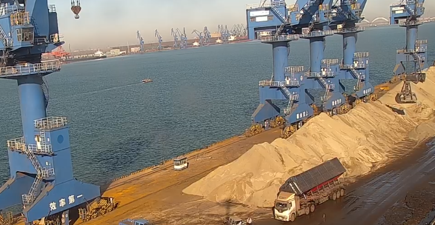

2026-08-13
Weather Risk Puts Laycan Resilience Back in Focus for Bulk Materials
Recent dry-bulk reports show how approaching storms and changing vessel availability can quickly alter freight conditions and shipment timing.
天气扰动让散装建材运输重新关注 laycan 韧性
近期干散货市场报告显示，风暴临近与可用运力变化可能迅速改变运费环境和发运节奏。

Early-August shipping commentary noted stronger Capesize conditions as forward demand improved and weather concerns affected expectations for vessel availability. The signal is broader than one vessel class: when storms disrupt approaches, anchorage or berth schedules, cementitious cargo programs can face compressed laycan windows and higher execution risk.
1. Weather changes both timing and vessel supply
A forecast storm may delay an incoming vessel, restrict port operations or push several ships into the same reopening window. The commercial effect is not limited to a weather delay. Available tonnage, owners' positioning decisions and berth queues can all shift together, changing the freight option for a ready cargo.

2. A resilient laycan starts with cargo readiness
For cement, clinker, GBFS and GGBFS, resilience means confirming specification, quantity, stock position and loading method before the vessel plan becomes urgent. A realistic laycan should include the operational constraints of the origin port and avoid assuming that every weather delay can be recovered through faster loading.
3. Coordination protects the shipment plan
Chartering, terminal, inspection and documentation teams need the same working timeline. Clear decision points for nomination, survey, hold acceptance and loading sequence reduce the chance that a short weather interruption becomes a prolonged commercial delay.

Takeaway: Weather risk is a logistics variable, not a footnote. Bulk-material buyers and sellers can protect shipment economics by building practical buffers into laycan, confirming port readiness early and keeping vessel and cargo plans synchronized. Industry signal: Hellenic Shipping News dry bulk market report, 10 August 2026.
8 月上旬的航运市场评论指出，随着远期需求改善，加之天气因素影响可用运力预期，海岬型船市场趋强。这个信号并不只针对某一种船型：当风暴影响进港航道、锚地或泊位计划时，胶凝材料货盘可能面临 laycan 窗口压缩和执行风险上升。
1. 天气同时改变时间与运力
预报中的风暴可能导致来船延误、港口作业受限，或使多艘船集中在复航窗口。商业影响不仅是延误几天，可用船舶、船东调度和泊位排队都可能同步变化，从而改变已备货货盘的实际运费选择。
2. 有韧性的 laycan 始于货物准备
对于水泥、熟料、GBFS 与 GGBFS，韧性意味着在船期变得紧迫之前确认规格、数量、库存状态和装载方式。合理的 laycan 应纳入装港的实际作业约束，不能假设所有天气延误都能靠提高装船速度追回。
3. 协同可以保护发运计划
租船、码头、检验与单证团队需要使用同一份时间表。提前明确船舶指定、检验、货舱验收与装载顺序等决策节点，可以减少短暂天气中断演变为长期商业延误的概率。
结论：天气风险是物流变量，而不是脚注。散装建材买卖双方可通过为 laycan 设置合理缓冲、提前确认港口准备度，并保持船舶与货物计划同步，来保护发运经济性。行业信号来源：Hellenic Shipping News 干散货市场报告，2026 年 8 月 10 日。
Planning a GBFS or GGBFS shipment?
Share specification, quantity, destination, loading method and laycan.
正在规划 GBFS 或 GGBFS 发运？
请提供规格、数量、目的地、装载方式和 laycan。